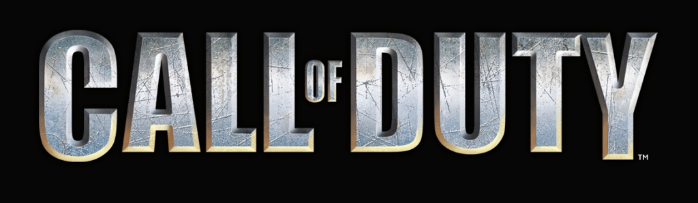
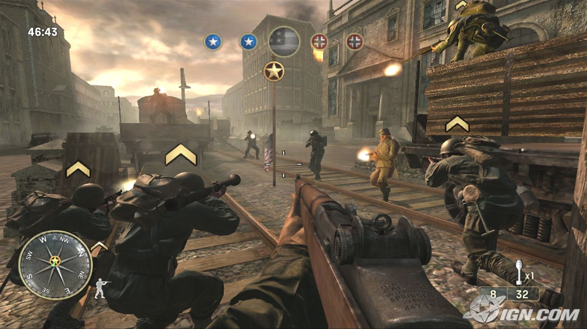
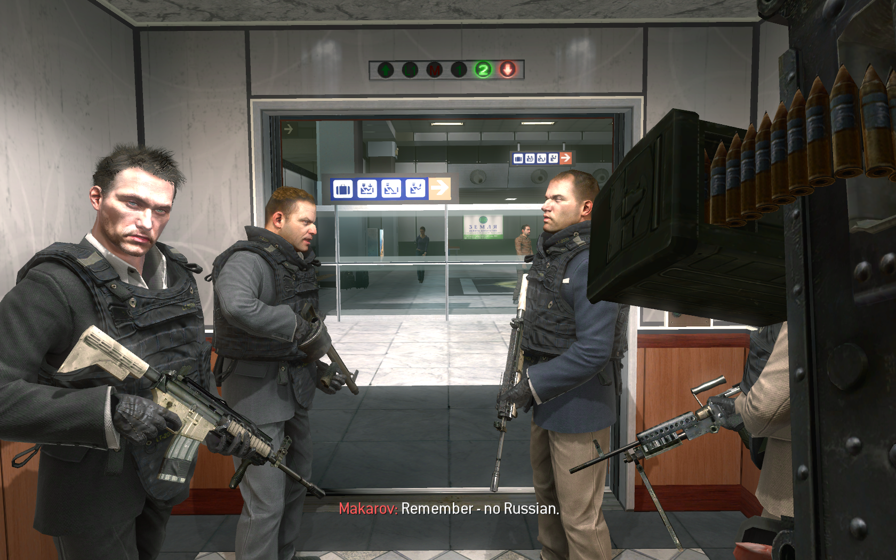
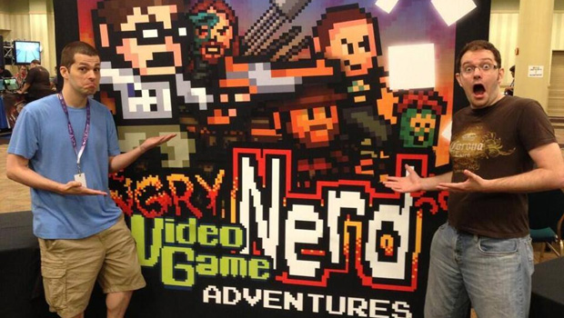
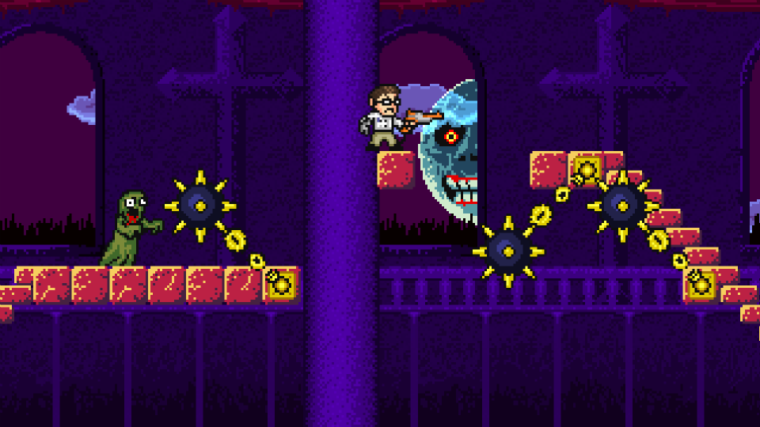
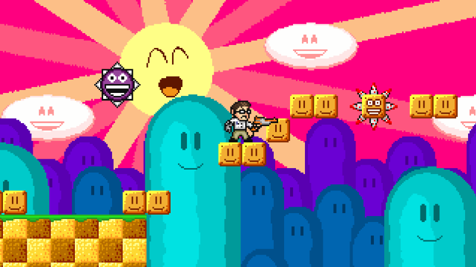
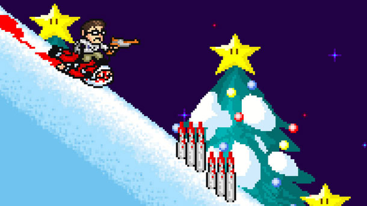

Call Of Duty: Series Review

Like it or not, Call of Duty is arguably the biggest game series in the gaming industry today, and despite the plea of many gamers, it is not going to stop any time soon. The Call of Duty license is practically a money-printing machine and this series has garnered plenty of cash, love and hatred. Some say COD games are a great time, others say they are trash. Some say whatever helps bring money to the gaming industry is good for all us gamers, and others say that COD is destroying the gaming industry. With Call of Duty: Ghosts releasing this fall, the 10th game of the main series, I think it is important to go back and look at the previous nine games and give a quick one-paragraph review for all of these games. Again, these are all my personal opinions.
Call of Duty (2003):
The first of the series, COD was a fresh new approach to the series of World War 2 games that were flooding the market, lead by Medal of Honor. Call of Duty came in and gave us three great campaigns letting us play as an American, British and Russian soldier respectively. The atmosphere was awesome, the multiplayer was fun and the single player was challenging. Overall, a great start to the series. Score: 8/10
Call of Duty 2 (2005):
A launch title for the Xbox 360, COD 2 displayed impressive visuals at the time and just all around a great time. From the single player campaign to the eight player multiplayer, it was one of the first games many of us got to play online with the new Xbox 360. A great game to launch the new consoles, was critically acclaimed by critics and gamers alike, another solid title. Score: 8/10
Call of Duty 3 (2006):

This was when the World War 2 era games were running tired. A few gameplay gimmicks were included into the game but it did not offer much new or interesting to the series or this game in particular. They were pretty much just tacked on. The multiplayer just wasn't nearly as satisfying when compared to other games released at the time, and the series looked like it was running out of steam. A pretty lackluster title for the series. Score: 5/10
Call of Duty 4: Modern Warfare (2007):
Hands down, the best COD in existence, this was a fantastic game and if anyone says this game wasn't enjoyable and the multiplayer wasn't fun, they are lying. One of the best online experiences anybody could hope for, everyone who owned an Xbox 360 or PS3 owned COD 4 and spent hours upon hours ranking up and having fun with their friends in the various game modes which have become staples of online gaming. The campaign was interesting and intense, and multiplayer was phenomenal, one of the greatest online experiences I personally ever had, COD 4 is the best of the series and in my mind is one of the top 5 best games of this console generation. Score: 9.5/10
Call of Duty: World at War (2008):

Back to WW2, this was a game I did not care for. Hackers were abound, the time period was done to death, the weapons weren't that fun to use (many just flat-out sucked), and many of the perks and equipment (particularly the bouncing Bettys and tanks) were overpowered. The best addition this game gave us was Nazi zombies, which was basically just a gimmick at first but caught on like wildfire. The game was much more violent and gritty than the other games, but the gameplay was as weak as COD 3. Score: 5/10
Call of Duty: Modern Warfare 2 (2009):

Another fun title, controversy surrounded the highly touted "No Russian" mission which added to the immersion of the story. I personally loved MWF 2 and I had many fond memories of me and my friends playing it online. Not as good as COD 4, but still a great time when it came out, and well worth the money. The multiplayer was awesome and the campaign was a lot of fun too. Score: 8/10
Call of Duty: Black Ops (2010):
Some people's favorite COD of the series, I hated this game. The lone positive was the zombie game mode with JFK, Castro, Nakamura and Nixon. The rest of the game was horrific in my mind. Score: 4/10
Call of Duty: Modern Warfare 3 (2011):
Nothing new. Pretty much take MWF 2 and take out all of the fun. This brought nothing exciting or new to the series and this is just not a good game by any stretch of the imagination. While Black Ops was a terrible game, at least it had the zombie game mode, this didn't have it. This in my mind is the worst of the entire series because in my mind it seems as if they just copied Modern Warfare 2, changed the boxart, took away the great maps, added in a few overpowered killstreaks, and boxed it up and shipped it out for a quick pay-day. Not cool guys. Score: 3/10
Call of Duty: Black Ops II (2012):
Better than MWF 3 and BO, but not as good as MWF 2 or COD 4. All the same problems still persisted. Could be fun for short stretches of time, but quickly became home of what is the worst community in gaming. The COD community makes every game much worse. The single player was uninteresting and predictable, the multiplayer was fun but exploitable. Overpowered weapons, chokepoints and the terrible community made this game unenjoyable for longer than a few weeks. Score: 5/10
Series average thus far: 6.1/10
COD is a series that started off strong but grew lazy as far as quality is concerned. The last three installments have been a joke, but why would the developers change what they do? They will always make millions upon millions of dollars by releasing these games that are obviously lacking in quality. In the end, it's all about making as much money as you can, while you can. Activision and Infinity Ward live by this philosophy and until the gamers stop buying these games, the quality will never improve. There is always hope for tomorrow with the new installment of Call of Duty: Ghosts, but optimisim isn't very high after several weak press conferences that were shredded apart by critics and viewers alike. Only time will tell if we can go back to the good days of Call of Duty's origins.
Killzone: Shadow Fall
Ladies and gentlemen, here we are. The new generation of gaming has arrived with the release of both the PS4 and Xbox One. Usually, when new consoles launch they have a really rough start. Faulty hardware, games that feel "rushed" out to meet the public on day one, all in all launches are pretty rough on all edges. Killzone is probably the first game most people will buy for their new PS4, so how does one of the first games of the new console generation fare? Let's find out.
GAMEPLAY:
The first thing about Killzone games that someone will notice when compared to Halo or COD, particularly in the multiplayer, is the "weight" of the game. There are no 360 no scopes, there isn't drop shotting, or diving out of windows and such, the limit of speed might turn off some players, but I personally loved it. It made me feel like I truly was in control of these war machines, engaging in all out battle. Similar to Rainbox Six, you cannot run out into the open and hop around like a madman, because you will get gunned down faster than you can curse out. This is a very team-oriented game and a lone wolf style of play will seldom pay off. You must rely on your teammates to get your back, and this is both good and bad. Good in the sense it adds a new element, making individual achievement completely irrelevant and team work the ultimate focus. Bad in the sense that if you are playing with random people in a lobby, you can have some really bad teammates and the opposition can wipe the floor with you. I do however really like the gameplay. The guns have power and weight behind them, the controls are solid, and most importantly the game as a whole is fun to play, but it is very standard. Killzone does nothing that is particularly memorable, unique or special that will stick with you for a long time. It was a very safe game to make. Everyone loves shooters and as long as the guns go 'bang' and people fall over, then people will more often than not buy it, but that doesn't mean that Killzone is bad. It's just standard.
SOUND:
The audio in this game is very good. The guns sound crisp, loud and powerful. Killzone also has a trademark on possibly what is the greatest videogame sound of all-time. When in multiplayer and you get a kill, the game will give you a notification of your kill with a "chirp/ching" sound effect that is just strangely compelling and relaxing. The Helghast's radio chatter and dialogue is dark and intimidating, but the other voice acting is pretty funny. Shadow Marshalls and the rest of the NSA all talk like Christian Bayle in Batman. It's all over the top and macho, and the laughable voice acting on a part of the main characters makes the story mode a lot less interesting. ALl around, the audio was well designed on practically every front.
GRAPHICS:
This game looks gorgeous. Everyone can tell. The colors and bright, the graphics are sharp, and the action never slows down and the game runs with a very fast frame rate. While this game looks great, I do believe that this in a sense is used to try and cover the issues of the game. Making a good looking videogame in 2013 isn't an achievement anymore. EVERY game should look fantastic by now, but that being said you can certainly tell that the PS4 is using some serious hardware and power.
VERDICT:
Killzone is a really fun game. The multiplayer is a lot of fun, but the single player is forgetable. While the game is good it really doesn't do anything special that seperates it from the rest and makes it particularly memorable or special, besides the pretty graphics and the tab of being a launch title. The game can get old relatively quick and sadly, Killzone will suffer from the fact that this game was released at PS4 launch. I think that by the time the general population get the PS4 (probably by late spring in 2014) the online community will completely die out and this game will fade away into obscurity as one of those run-of-the-mill PS4 games that people play because it's simple and familiar. A pretty good game, you have spend $60 on much worse games than this, but those games don't come with a $423.99 investment of buying a PS4. A good game, but you don't NEED it. If you already have a PS4, it should be a decent enough title to hold you over for a little while, but don't count on it for more than a few months.
Score: 6.5/10
The Angry Video Game Nerd Adventures

Anyone who knows me, knows that I am very fond of James Rolfe, A.K.A. the Angry Video Game Nerd and all of his work. I have seen all of his AVGN episodes, donated do the AVGN movie and bought his game, but with that being said I am attempting to go into this game with a mindset that this is just another game that I must review as unbiased and neurtal as possible... that is simply impossible. AVGN Adventures was a game MADE for AVGN fans and from an outside person looking in, this is a slightly above average game, but to an AVGN fan, this game is phenomenal. I'll explain why, in my review.
GAMEPLAY:
Made in the classic 2D platformer that we have come to expect from the Nerd in his games, AVGN Adventures is a true side scroller and is perfect in this respect. The goal is simple: get to the end of the level. To get to the end of each level you will need to have quick reflexes, an active brain and a quick trigger finger to surive. The earlier stages are realtively easy, but the later stages the difficulty spikes up to near break-the-goddamn-controller levels of frustration. But, with that being said, the gameplay is great. It's challenging, fun and rewarding. The controls are tight and the powerups are fun to use. Also, a lot of humor is mixed into the gameplay, as well as several refrences to AVGN episodes, which if you are a fan, will make you laugh out loud, including the level bosses, the powerups and various enemies you fight and characters you play as. Very good gameplay, but frustration in the later stages could drive some people away from the game. Also, the game itself is pretty short if you are good at sidescrollers, possibly being beaten in around 4 or 5 hours, which is dissapointing from a game that you spent $20 on. I must also say that this game has probably the most enjoyable game over death screens in gaming history. Whenever you die, it generates a random Nerd quote and they are always fun to shout out in anger, especially in later levels. Nice touch guys.
SOUND:
Probably the best part of this game, the sounds are great and I'm not even talking about the gameplay sounds. I mean the soundtrack in this game is phenomenal and personally, I believe it is one of the best soundtracks in the past decade to grace any game. Since this game came out, I have literally gone and got the MP3 file for one of the stage songs and set it as my new ringtone and often when people call me, I find myself just holding my phone up to my ear and listening to the catchy beat and tunes. The other sound effects are also good, but the soundtrack is just in another stratosphere.
GRAPHICS:
Bright, vibrant and fun to look at, the graphics in this game are very good. Constant nods and references are made not only to AVGN episodes, but also to other NES and SNES games that the nerd has played including Castlevania, Metroid, Megaman and more. The Nerd himself looks about as great as an 8-bit sprite could and all the enemies and bosses, as well as the levels themselves, are varied and look great. There was never a point where I found myself going; "That looks awful." Awesome graphics, lots of fun to look at, nothing more to say here
VERDICT:

I personally don't believe I can give this game can have too accurate a score because it is held to different standards than typical releases. Usually, these "arcade" titles can't be held to the same scale as console releases because those have a much longer development time, much bigger budget and many more people working on it to ensure it's quality. However, with that being said, I personally didn't mind spending $20 on this game and I believe it is worth $20 but only if you are an AVGN fan. If you have never seen any AVGN episodes, or just don't like the Nerd in general, pass this game because you will not enjoy it. This game was made with the fans in mind and someone like me truly appreciates that there are those who want to makes games for the fans, not just for a quick buck. Being a die-hard AVGN fan I caught all the references, laughed at various moments and loved the game entirely, but that doesn't mean I find this game flawless. The difficulty in this game is very sporadic. Some levels you will breeze through with ease, others you will be stuck on and as a result of this you will get frustrated with the game, or you will breeze through it and beat it in a realtively short time frame. My two biggest issues with this game is length and replay value. There really is no reason to go back and play this game again and due to the fact that the game is short, nothing new or surprising will happen. If the game was 2 or 3 stages longer and included different game modes, it could have been a must own, but as it stands, it is purely a game for the AVGN fans... and that is okay.